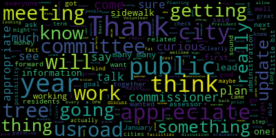
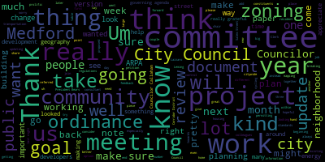
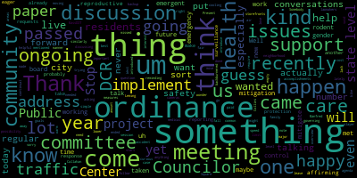
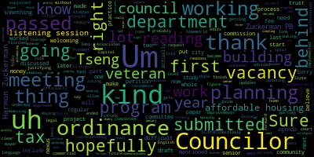

[Hurtubise]: Hey, everybody.
[Bears]: Mr. Clerk, give me a heads up when we're ready to go.
[Hurtubise]: Mr. President, I am all set whenever you are all set.
[Bears]: Great, and we're good on the Medford Community Media side as well?
[Hurtubise]: Medford Community Media is on, and they are, so I know that they are on.
[Bears]: Great.
[Hurtubise]: Because I see them in the room.
[Bears]: Fantastic. All right, then.
[Hurtubise]: I don't see the council booth account in there yet, but I do see the Medford Community Media. So I think we're good to go on that one.
[Bears]: Yeah, I think they probably don't need the booth for the Zoom meeting, I think, if I remember correctly. So we should be all right.
[Hurtubise]: I think that's correct.
[Bears]: All right, well, last meeting of the year. Hi, everybody. Thank you for being here. We'll get going right now. Medford City Council, Committee of the Whole, December 18th, 2024. It's a call to order. Mr. Clerk, please call the roll.
[Hurtubise]: Councilor Callahan.
[Callahan]: Present.
[Hurtubise]: Vice President Collins.
[Collins]: Present.
[Hurtubise]: Councilor Lazzaro.
[Lazzaro]: Present.
[Hurtubise]: Councilor Leming.
[Leming]: Present.
[Hurtubise]: Councilor Scarpelli. I don't see Councilor Scarpelli. Councilor Tseng. I don't see Councilor Tseng either. President Bears.
[Bears]: present, five present, two absent, the meeting is called to order. There'll be a meeting of the Medford City Council Committee of the Whole at 6 p.m. on December 18th, 2024 via Zoom only. The action and discussion item for this meeting is paper 24-006, which is a review of the 2024-2025 Council Governing Agenda. So we'll take that up. At our first regular meeting, January 9th, 2024, We resolved that Councilors would submit items to create a governing agenda document based on a draft template. We then met on January 24th, 2024 to review the governing agenda and refer it out to each of the committees. And we also made a motion to have reviews in June and December and to review the governing agenda regularly. And pursuant to those motions, we held the committee of the whole, I believe in June, and now we're having one in December to review progress to date, to suggest updates to the document, and to send a link to resident services and public engagement committee to be included in the January newsletter, the updated document. I wanna thank Vice President Collins for working on the updated document with me. Folks can find it at a link that I'll post in the chat. It's also available on the city website, but it is also on the council portal. And this is as of Monday when the agenda went out. So again, thank you, Vice President Collins for your work on this with me. And I think we can either start with any comments or questions from councillors, and then we can quickly go through and review highlights from each committee so far this year and what's coming up for the next year. With that, I'm happy to go to Vice President Collins if there's anything you'd like to add.
[Collins]: Thank you. I think this is, I'm just really grateful for the opportunity that the governing agenda and the biannual review presents us with to take a step back and look at the year in total. I know that for myself, it's really easy to get caught up in the day-to-day, week-to-week, month-to-month work and lose track of kind of a big picture of which big projects have advanced incrementally, which things have come together over the course of a lot of months of work. I also find that it's really easy to forget about things that we did, substantive as they may be, because this Council has been extraordinarily productive, busy, and prolific. And I thank all of my colleagues for collaborating to make that The reality. This is just my second term on the city council, but our committees have been much more active than they ever have been in the past. I think that every Councilor has been really diligent about Using the committee structure to make sure that We articulated big goals in the governing agenda at the beginning of this year, and we've been very thorough about meeting on those and pushing forward our priorities in our various public meetings systemically. And I think that a lot of that progress, at least for me as an individual, would actually be pretty hard to just get a bird's eye view on if not for this document so that we can compare Kind of our goals and hopes and dreams and plans January version to where we are 11 months later. So I'm just, I'm really grateful for this format, which allows us to kind of compare how we started and what we've made progress on and even the projects that we've completed. And really grateful to my colleagues for their work on our shared larger projects and our individual projects that different people have taken point on. You know, all of the projects in the governing agenda come from things that we heard from the community, things from our constituents, things that people in the community wanted to see, want us to see us working on. That's why we're here. That's why we do this. And I'm really glad that we have a document that we could point to and say This is why this was a goal. This is why this is a goal. And this is what this is what we're working on. And this is why this is why we're working for you. And I think that's really important. You know, in our. And then the word gets used a lot, but I think it really is a valuable goal to try to make the work of the council more transparent. And to me, that just means using more and better tools and language to describe to people what it is that we do in meetings. This is a way to break it down and show people how long it takes to get from A to B on a variety of things. So looking forward to just a quick review tonight, and then we'll do that again in six months. Thank you.
[Bears]: Thank you, Vice President Collins. I'll recognize Councilor Callahan in just a moment. And just wanted to note, you know, throughout this project, this meeting, if folks have amendments that they'd like to make or edits, or if they want to submit edits subsequent to the meeting, we can update the document a little further before it goes out with the newsletter in January. Councilor Callahan.
[Callahan]: Thank you. I also just wanted to say that very few cities do this. Very few cities have a document where you can actually see what are the goals? What is the, not just a pure value statement vision, but what are the actual policies that we're trying to pass? And I just want to thank whoever came up with this idea, because I think it's really brilliant. And to be able to have it visible to the public, and then we go over it in public meetings, I think is crucial. And like you said, great for transparency. So thank you to everyone who put it together.
[Bears]: Vice President Collins.
[Collins]: Thank you, and I'll just take that opportunity to note that it was President Bears' idea.
[Bears]: Thanks. I wasn't going to take credit, and I really do feel like it's a team effort, but, you know, working with my colleagues over the past few years and seeing what I thought and then working with everyone in this council to implement some changes around this document, creating a committee structure that really focused on being functional and effective and aligning with how the city works was a major priority at the beginning of the term. And I think it's gone well. I am going to note some unexpected things that we've learned so far and just ways to think about this going forward. But overall, I'm really just proud of this council and the work that we've done. putting it out there. I totally agree with you, Councilor Callahan. Having this document and being able to point to a single document, yeah, it's a little long and sometimes a little wordy and maybe a little wonky, but to say here's what we're doing and it's actually comprehensive is groundbreaking in my opinion. All right, well, we can start I just want to, I'll do a quick screen share and if folks, you know, want me to do that when they're talking about their committees or any other point I'm happy to do it but just wanted to let people see kind of the form of this document. So, this is the front cover page with all our lovely names on it. City Seal, but there's this great table of contents and luckily our new portal even makes it linkable. You can click into each different section, starting with a helpful document section, and then it's broken down by each of our committees. Our Committee of the Whole, Administration and Finance Committee, our Education and Culture Committee, the Governance Committee, Planning and Permitting Committee, which has been particularly prolific, and as well as our Public Health and Community Safety Committee, Public Works and Facilities Committee, and the Resident Services and Public Engagement Committee. And within each of those sections, there is a kind of broken down in three ways, some major projects that the committee is working on, some ordinances that the committee is working on, and then some of the oversight and engagement work that committees do as part of their task. So I'll start with our helpful documents. This is just a great place to find just a few quick links to some of the major plans and things that we reference regularly in our meetings. are not just our committees and their members, but the city's ordinance, the code, as well as the major plan governing a lot of what we're doing around the city comprehensive plan, talking about zoning and built environment and what the vision for the community is over the next 30 years. Housing production plan, how we're trying to produce more housing so that people who live here can stay here and people who want to live here can move here. A climate action and adaptation plan to address the climate crisis, and our open space and recreation plan. And I'm hoping we can get some more documents linked in here in the future as well as they are developed. Our committee of the whole, which I chair, but as a committee of all seven councilors has had a lot of meetings, but mostly those are meetings to review papers from the mayor or to review things that have been reported out of another committee. order review kind of ad hoc resolutions that are coming up during the year. But we did have two projects in committee of the whole term started the tree preservation protection and replacement ordinances and our food truck ordinance. We have held meetings on those this year. Food truck ordinance we are hoping to incorporate some significant legal feedback. We definitely learned a lot about the laws around food trucks and our meeting on that this year. And the tree ordinance we met on in November and the tree ordinances, the public tree ordinance and the tree committee ordinance are awaiting some review by city staff as well as some Councilors before coming back to the council committee of the whole. And then the private tree ordinance is going to be reviewed by city staff and incorporated also into our or at least reviewed by our zoning consultant because that is mainly a zoning ordinance. So that is being, we're taking advantage of the resources that we have around zoning to review the private tree ordinance. And the goal is really to get this done early in 2025 so that we can get these ordinances on the books and update our public tree ordinance and get a workable private tree ordinance in place so that we can stop losing trees and hopefully start growing our tree canopy again. So that's Committee of the Whole, happy to, it's an easy one, happy to pause there and if anyone has any comments or anything they want to add on the Committee of the Whole before moving to the next committee. Seeing none, I will also take on the next committee, which is our Administration and Finance Committee. This hasn't met as much as I had initially thought and it's kind of one of those lessons learned. I think a lot of what this committee nominally is responsible for is our things that we've been doing in committee of the whole. There have certainly been a few meetings on more on the ordinance level. But, you know, we have our annual budget process every year that happens mostly in committee of the whole meetings. And we are now going to be in our second year of an annual budget process guided by our first ever budget ordinance, which is really exciting. As folks noted, there were some dates in the meeting schedules for the upcoming six months around the budget, including getting some of our budget recommendations in early March per the budget ordinance. And we did work on a major project around the Proposition 2.5 overrides. We had our first ever override process this year, and since Proposition 2.5 went into effect nearly 50 years ago, and the passage of Questions 7 and 8 is really significant for our public schools and our DPW. So that's going to be a part of our budget process for the first time this year. working, you know, we have we did appropriate the funds for the DPW sidewalk and street repair crew to bring that back in house. Certainly won't fix every street and sidewalk, but it's good to have a team in the DPW dedicated to this and the staffing restored for this function, which is really a basic essential function. And we have the certainly that we will hear from our Medford public schools, the school committee will be working on implementing their supplemental budget this year and then working on their budget process for fiscal 26. And, you know, our role in that is just to approve the allocation and they approve the expenses. But I know that it's going to be a really impactful year in our public schools because of the funds that are going to be available for them. So that's exciting around the budget. I talked again a lot about the revenue generation project and proposition two and a half. We were able to complete, you know, at least a piece of that project this year around the overrides. And, you know, I think revenue generation outside of proposition two and a half is always a focus of the council, especially when it comes to economic development, as well as just updating our city's ordinances. I really want to thank Councilor Leming for leading on linkage fees, hopeful that we'll be able to meet on updating the fee schedule for the city early this year. That was a big call as well from the council earlier this year, just so that we're not 30 years out of date on inflation, which we have been on way too many things in the city for a long time. I'll just move quickly through the rest. Another project that we talked about was the classification and compensation study implementation. We were hoping to get started on this many months ago, but we have not received any sort of document or really even any sort of update from the city administration on when we can expect to be updating the city's personnel ordinance and looking at this. So I'm going to be checking back in with the administration in the new year on that. And I will go to Councilor Callahan.
[Callahan]: Oh, I said they just had a question. What is the appropriate next step? I don't think it's a huge rush, but I would love to see that. So it sounds like you're going to check in with them. Just was curious about what the next step is.
[Bears]: Yeah, our role is really to we have to update the personal ordinance. That's how the so that element of it around compensation and changes to the different classifications. in that ordinance, that would all have to come to us. So I think the next step is we need to see what those recommendations were and then discuss those changes. And I think it's a big project. I think we should take due diligence and time with it. But really, the next step is that we need to have the administration let us know if that study is completed, if there's a document, some sort of implementation recommendation from the Collins Center, and then look at that from there. So, we'll see.
[Callahan]: Great, and it sounds like you're willing to at least just ping them and see what the update is.
[Bears]: Yeah, absolutely, yeah. I'll get in touch with them and let them know it's something we want to work on this year, this upcoming year. mentioned the linkage fee project. We have a home rule petition in at the State House to update the linkage fee ordinance and allow for regular updates to our linkage fees. And I believe also then we would look at an updated linkage fee ordinance. I don't know if Councilor Leming, you want to talk any more about that? You were really leading that project.
[Leming]: Sure. So Right now, they're the two moving parts that are first the homeworld petition going into the State House, which. I believe they should be hopefully submitted when they convene. And then if it gets approved, it will allow the city to do those regular updates. The other part of that is we were advised by the planning department that It would be best to finish the affordable housing nexus studies before we went forward with actually updating leakage fee ordinance to include a direct link to the affordable housing trust and as I explained there are some legal reasons behind that. So if the ordinance were passed before there was a study justifying it, then it could be struck down in court. So the draft language for that is all finished. It's all completed. I've been corresponding with the mayor and she's getting the money she's told me to actually fund this $80,000 Nexus study to put money from the Capital Improvements Program into the Affordable Housing Trust. And then once that's underway, we could just officially pass the edits, which again, have already been discussed extensively in committee.
[Bears]: Great, thank you, Councilor Leming for that update. And the Home Rule petition did end up getting submitted Uh, this session so and I actually did have a little correspondence. I'm slightly hopeful it might end up in an end of year omnibus bill or a local, uh, home rule petitions package. Um, so Maybe we'll we'll have some good news on that before January 1st. We'll see Great Um We also worked on maximizing tax exemptions that are allowed by the state to maximize those. I really want to thank Councilor Leming on both the MGL Chapter 59, Section 5, Clause 22G, as well as adopting provisions of the HERO Act. That is something we are always looking for to make sure that our residents have the most opportunities under state law for exemptions from the property tax. We have also completed an establishment of a General Stabilization Fund and a Capital Stabilization Fund and Water Sewer Stabilization Fund, which has already been making a difference this year, having access to reserve funds for emergencies and capital needs. Ordinances-wise, we passed our budget ordinance. So excited about that and excited to see it used again this year. We did discuss the commercial vacancy tax, and that is still in committee. Maybe it can come up again in the future. I will go over to Councilor Levingston, since that was his proposal, if he wants to talk about it more.
[Leming]: Sure. So that whole project kind of split off into two things. So a couple of the things that I was working on initially ended up kind of being papers that I submitted to Inns Associates for the planning process. The commercial vacancy tax, um, I think it became clear during the 1 meeting that we had on it that it would require. probably meeting a few more meetings with building department and other parties to planning department to figure out the future of that, but I also submitted a request to the planning folks to include a building vacancy uh, tax, which is a building vacancy, I would say a fee, which is something that has been implemented in other cities without the need for a home rule petition. And it's not quite the level of a tax, but that's kind of like the other manifestation of that. Um, it would just come up later in the zoning process.
[Bears]: So this has really evolved and maybe we should update this, uh, going forward. Yeah. I'll keep that as a note. Mr. Clerk, if you could keep as a note, we want to update this section around the commercial vacancy tax.
[Lazzaro]: Thank you. I just wanted to note that this is something that's come up in my discussion with residents lately a lot, especially about what happens to be the neighborhood that I live in. West Manfred Square has a lot of empty storefronts, and it's just been a common discussion. I'd love to help support any conversations you're having, Councilor Leming, if it's helpful at all. So if you need a backup on this, I'd be happy to help.
[Bears]: Seeing a nod, yes. Next item is the good landlord tax credit. We actually have reviewed this and found that the way that the state law was structured makes this a really actually unappealing credit to implement. So it's probably not something we're going to move forward with, at least the discussions that we have with the assessor, or that this would be of great benefit to essentially only the very, very large commercial property, well, residential property owners, but the companies that own large multi-unit buildings and would not really be of benefit for our two-family, three-family landlords. That was really frustrating to hear. Councilor Callahan, did you want to talk on that?
[Callahan]: because I have not gotten the briefing that you have from the assessor, I am very curious and I just want to make sure that for myself I also agree that it is, you know, if I, like to me, if I think that it might be something that might help some folks. So I'm just curious, is the assessor the right person to talk to? Is there Like, how can I understand a little bit more about it just to kind of get my own sense of what it is that that state law is in fact offering to us?
[Bears]: Yeah, I think that we could reach out to the assessor's office and maybe try to get a written update for sure. Matt and I had a couple meetings, or Matt had some conversations, I had some conversations, and sure, we could pull together some information from those. share that with the rest of the council.
[Callahan]: That would be lovely. Thank you so much.
[Bears]: Great. I'm just going to zoom through the rest of it. Oh, go ahead, Councilor Collins.
[Collins]: Sorry, you saw me raise and lower my hand because I wasn't sure if this was worth putting out there. But just for the benefit of residents who may be watching this update meeting, just to be clear, we're not going to change the disposition of any of these papers in this meeting. We're not going to take anything. We're not going to remove anything from committee. We're not going to fully dispel with any papers, even though we might discuss what is likely to happen with them in the future. This is to just give a general overview. So for folks wondering, you know, when will the next step take place? When will official action take place? Not in this meeting. Any papers even that we're going to take off the docket, they would have to be reviewed and placed on file from the committee that they're currently in. So just wanted to note that for clarity.
[Bears]: Thank you, Vice President Collins. I appreciate that. No action is being taken at this meeting. Um, this is just, uh, updating the document and kind of reviewing our progress on these different items. And, um, I think it would be good for all of our committees at some point this spring to maybe have a little bit of a. A clean up session at 1 of their meetings as well and, um. Either receiving place on file any papers that won't be moving forward or. Otherwise, refer things to new committees if it seems like they should be going there. For the rest of this, I'll just go quickly. We also, in the future, would like to look at a Community Benefits Agreement ordinance around having a Community Benefits Committee that negotiates with very large real estate projects and nonprofits around what the needs assessment for our neighborhoods is and figuring out how that would work in alignment with our zoning process and also with the Community Development Board. We have a look at a percent for art ordinance that was proposed many years ago, which would create a requirement that 1% of costs would be earmarked for public art projects for large developments. So that's something we could look at. We could also look at that probably in the context of our zoning project. President Morell and I proposed looking at paid family medical leave for our city employees. I think that's something I really want to talk about in our budget cycle this year to see if that's a possibility, as well as extended illness leave bank. And then beyond that, the committee has advocated for pilot legislation requiring large nonprofits like Tufts University to pay a fair share in property taxes, as well as our general review of the city's finances. We do receive monthly warrant articles and regular financial updates and, um. Reviewing the city ordinances as named here as needed. I'll go to Councilors are and then Councilor Callahan.
[Lazzaro]: Thank you. I'm sorry. I just wanted to, um I know you were you're trying to move forward, but paid family medical leave. I think I missed what you said about it. If anything, is there any possibility of that moving? this year, do you think?
[Bears]: So the enabling, the city council is the authority to vote to implement the program. City council by majority vote can enter into the state's paid family medical leave program. It would initially, it would require the city to budget for that. So there'd be a budget impact, which a couple of years ago, Director Dickinson estimated within the $500,000 to $1 million per year range. may also have collective bargaining impacts. So those are some of the questions we'd wanna discuss with the administration if we were gonna move forward with that. But we can vote to enter.
[Lazzaro]: Thank you.
[Bears]: Councilor Callahan.
[Callahan]: Thanks. So pardon me if I forgot I was up late last night. And I just wanted to ask, I think the mayor was going to provide us with a little bit more of a long-term capital spending plan now that we have the stabilization funds. Did that happen? Are we still waiting for that? Is that something we expect in that administrative finance committee?
[Bears]: Yeah, I think we'll see that in committee of the whole sometime in the first couple months of the year around the stabilization fund. And I think we may also expect an update to the capital improvement plan, which will be an even longer outlook as well.
[Callahan]: Thank you.
[Bears]: You got it. All right, I'm going to turn it over. Well, the next committee was education and culture committee. That's Councilor Scarpelli as the chair who's not present. I don't think this committee met this year. It had a couple One item looking to identify public internship opportunities for students that Councilor Tseng has been proposed and wanted to work on. And I will on this 1, I will recognize guest on for public participation. 3 minutes.
[Fiore]: Thank you, Mr. President. Gaston Fiore, 61 Stickney Road. I just had a question on page seven, right at the bottom. It says the first supplemental appropriation allocates $3 million to Medford Public Schools for fiscal year 25 funding. I would replace 1.75 million in ARPA funding. So I remember about those 1.75 million in ARPA funding that got voted sometime in June. So what happened to those 1.75 million ARPA funding given that it says here that they have been replaced by the 3 million Um, from the overrides. Thank you.
[Bears]: So that, uh, there was a vote to revert that to, um, uh, essentially it was reverted back to the city for use for ARPA related purposes. Um, uh, the mayor, we would have to talk to the mayor about, uh, exactly specifically how it's going to be spent. All ARPA funds need to be encumbered by December 31st of this year per the federal law. The mayor did notify us that about 850,000 of that maybe a little bit more was utilized to purchase a new fire truck that was essentially the city of Lynn had purchased a fire truck. that was not able to fit in their fire stations but does fit in our fire stations and we were able to purchase that truck and that was a really big windfall because not necessarily from a money perspective but from a time perspective because right now it takes between 36 and 60 months to get a fire truck to the city and we're going to get a new vehicle engine. right away because it's already been delivered to Lynn. So I do know that is one item we received specifically that this funding was going towards, and the mayor said in a communication to us when we did the supplemental appropriation vote that those funds would go essentially towards capital priorities and other items in the capital plan so that they'd be expended before December 31st. But the mayor, I believe, is going to release a detailed final reporting on ARPA funding after the after December 31st.
[Fiore]: Okay, thank you. So will there be a way to note in that detailed filing that we had 1.75 and then, you know, if less got used that we actually lost whatever remains up to 1.75? Because it looks to me that, you know, I mean, I'm not sure, but this replacement, I don't know whether it was a smart idea in the sense that even though we have to spend it by the end of this year, Jose Hernandez?s iPhone 2?s iPhone 2?s iPhone 2?s iPhone 2?s iPhone 2?s iPhone 2?s iPhone 2?s iPhone 2?s iPhone 2?s iPhone 2?s iPhone 2?s iPhone 2?s iPhone 2?s iPhone 2?s iPhone 2?s
[Bears]: told us in public meetings and committed to, at least in conversation with me, they're gonna try to spend every last dollar that's available. And that's definitely the goal that I want to hold them to. Okay, thank you very much. I appreciate it. You got it. Vice President Collins.
[Collins]: Thank you. Yeah, totally just echoing what was said. And just to reinforce the point, I know that the mayor's team has been doing a pretty good job of cataloging exactly what our ARPA expenditures have been and breaking those down by category. I also do know and I don't think it's at all true that we're going to be leaving ARPA money on the table. I know that this was a fairly, you know, it's close to the end of the year. that the reallocation back to ARPA was made because of the revenue replacement from the Prop 2.5 override. However, there were also some pretty late-breaking major expenditures that we did use ARPA funding for. So I just don't think it's, I don't, people shouldn't worry that we're leaving our ARPA monies on the table.
[Bears]: Councilor Callahan.
[Callahan]: Thanks. I'm absolutely in favor of us checking in and making sure that that money is spent well. I will say that Clearly, the mayor and the administration knew that there was a possibility that the overrides would pass. They knew about this 1.75 million. I'm sure that they had a plan for how to spend that money in case those got passed. But again, I appreciate it, and I think we should look into it. But I doubt very much that we lost that money.
[Bears]: Yeah, and there was a communication or discussion, I believe, around the paper itself that there were projects in the pipeline that may have been asked for funds from the capital stabilization fund or another source that instead this ARPA money will be able to go towards, such as that fire engine, which it wasn't, you know, there are several fire apparatuses in the capital improvement plan along with, I think the mayor may have mentioned police cruisers and a couple of other items. There was a written document somewhere in a packet that we received. go to the governance committee. This is alphabetically convenient. Councilor Tseng is also not present, so I can handle that quickly, and then we can go to our last four committees here. But this committee focuses on basically rules, charter, elections. The two projects that really have been worked on or are being planned to be worked on are updates to our city charter. We did have some preliminary meetings beginning earlier this year. some prior to September and then starting in October and November. And we just received the draft proposal from the mayor. So we have that and we will be considering in the new year in January and February and maybe into March some amendments to that proposal. And then getting that to the mayor and getting the mayor to get that to the legislature so that the legislature can pass it. in time for it to be on the ballot in November of 2025. And if the voters were to approve it at that point, it would go into effect for the following election in 2027. So that's another huge, exciting project. I do want to thank the Starter Study Committee and the mayor and the Collins Center. I know there will be some changes, maybe significant changes that we choose to make. You know, we are the the first elected officials taking a look at this after the mayor and, you know, we, it requires a super majority vote of this body to approve and we are the legislative body of the city. So our voice is very important in this project. And I believe we will also, speaking with Councilor Hsuang, who's the chair of this committee, and I believe I'm his vice chair, we will be probably soliciting some feedback from our multi-member boards and commissions, as well as the school committee, maybe some other folks as well, just so that if they want to have a voice as part of this process, as the sitting school committee and boards and commissions, we'll be able to incorporate some of their recommendations and changes as well. All right, I'll turn it over to VP Collins, planning and permitting committee.
[Collins]: Thank you. Well, zoning wasn't literally the only thing that we did in this committee, but it was overwhelmingly the work of this committee so far this year and will remain the case next year. We had, I honestly, I gave up on counting the number of zoning meetings that we had. I think President Bears might have the number. 16 so far.
[Collins]: I would have guessed even higher. We began meeting with Innis Associates very, very close to the top of the year, initially kind of mapping out our work plan for the comprehensive review of the city's zoning ordinances. And that was kind of a project in and of itself, because we knew that we wanted to talk about some citywide zoning approaches, some tweaks that would affect the whole community, and that we also wanted to go neighborhood by neighborhood or geography by geography, as the zoning consultants often refer to it in their language of planning consultants, so that we could consider both, you know, on really a street-by-street, neighborhood-by-neighborhood level, what do we know that the community wants for this neighborhood based on all of the research and community feedback that we have gathered? in the past, and especially through projects like the comprehensive planning process? How do we make these more localized changes to manifest what we know people want? And then what are the changes that it makes sense to consider as a unit citywide, things around housing incentives, parking, et cetera. So breaking down how those pieces might work together so that we could get through all of our goals. We got our feet wet with some technical changes at the beginning of the year, updating our definitions, making some changes around site plan review that were really important on the city side. And one of my personal favorites, taking the vote so that the official zoning map of Medford is no longer paper and colored pencil, but an actual GIS digital file, which I think is pretty cool for 2024. Since then, in July, we really dove into kind of the meat of the project. We had a really cool mapping workshop in July, which I think set us up for our kind of geography by geography work that will carry us through June of 2025 or later. The zoning consultant prepared a lot of different kind of aerial views that showcase different characteristics around Medford. We looked at topography, we looked at flood zones, we looked at density, we looked at demography, we looked at traffic, so many different ways to think about what our places feel like and got a lot of interesting feedback there. We've been applying all of this to our geographies work. We started with the Mystic Ave Corridor District, which we just ordained last night. We had many, many meetings on that in committee. I went to City Council, I went to the Community Development Board, came back to the City Council last night, and it's been ordained. The Salem Street Corridor District was the next geography in the queue, and that one is about midway through. Well, a little bit more than midway. We've had a couple meetings about it in committee. It was just referred to the Community Development Board last night. They'll be holding public hearings on that as well. Abutters, I think, should be getting notices in mid-January. I know the planning staff is planning to send out those notices after Christmas so that doesn't get lost in Christmas mail. So there'll be more public hearings about the Salem Street Corrector District, and then I'll come back to the City Council. And towards the end of this year we've also been mapping out our plan for for what's next for what geographies, what neighborhoods will be turned to next, I don't have this memorized off the top of my head, but I'm pretty sure that at the beginning of the year, we will be looking at, I think we'll be turning to South Medford and hillsides. And then later in the year, we'll be turning our focus towards North Medford, West Medford, Wellington, Medford Square, not in that order. But we are going to make sure that we keep a pace so that we can do a really thorough review and update of the zoning in all of Medford's neighborhoods, and then kind of widen the scope again and consider those broader topics that we really want to not consider piece by piece, but think about the whole community in one discussion. So that's zoning where that's, you know, that's a three minute version of zoning. President Bears, would you mind scrolling down? I think there were a couple other ordinance projects that I wanted to, oh, right, sorry. Green score also subsumed within zoning. This was something that we reported out kind of in between Mystic Avenue Corridor District and Salem Street. This is one of those citywide strategies. Um, Greenscore is, in a nutshell, it's a rubric that, um, is comprised of our existing building development standards, you know, when you develop in Medford, you know, what, what you have to do, specifications that you need, um, to build by, to be acceptable, to be approved. Um, and it also encompasses some newer and more ambitious environmental standards. And it also includes, um, not just environmental standards, but also community amenities. So that we can be encouraging developers to be adding in more of the things that we want to see into their projects, things like sidewalk improvements, things like parks, things like shade, hydration stations, and rewarding them when they do add those amenities into their projects. And then I'll also mention transportation demand management is an ordinance that's been brought up by councillors Leming and saying so that we can kind of this is a policy where we're in we can take a holistic look at transportation options in the city and also in the region. and set up a community-wide policy to be making sure that as new development comes in, development options are streamlined and that we can be encouraging developers to help us further streamline and build our transportation system as they're adding to our built environment. If you'll scroll down just a bit, President Bears. Thank you. To round this out, some of the other things in this committee, the condo conversion ordinance. This is an ordinance that I proposed last year. It's kind of in stasis right now. It doesn't totally fit in within the zoning work, so it's kind of on the back burner. But I'm hopeful that we can advance this in 2025, because this is another strategy that would help us maintain Um. Maintain rental units as they are in Medford instead of seeing more of our housing stock being converted to unaffordable luxury housing. In this committee are also some of our housing home world petitions. Um in 2022 President Bears and I proposed. Um that the council look at a tenant first rate of refusal. Normal petition as well as a rent stabilization and no fault eviction The rent stabilization and no fault eviction protections. We had one initial meeting on this. I think just one initial meeting on this over the summer. We haven't returned to it yet. This has been a very busy committee. I am hopeful that we could pick up this project again. uh, early in 2025, especially when the new state legislative session resumes. Um, the real estate transfer fee Home Rule petition was also referred to the Planning and Permitting Committee. However, uh, before we met on it in committee, we did learn that the Affordable, uh, Homes Act at the state level did not include, um, the transfer fee, uh, as an op- as a, um, local option within it. So outlook is grim for this strategy at this time. Just finally, we will also review few schedules for a germane to the planning and permitting committee. We have the goal of reviewing a cycling safety ordinance to kind of adhere to and strengthen the city's existing complete streets policies and plans. We are hoping to, and then we have a number of other projects, including energy disclosure and other, I think there's, scroll down here on my own copy. We have several other permitting and building related projects that I think could all cohere pretty well with the zoning work that we're doing, such as energy disclosure, benchmarking ordinance, which kind of go along with us trying to better work hand in hand with especially large developers to make sure that they're doing their part to help us know how we are doing at progressing towards our energy efficiency goals and our climate mitigation and adaptation goals and give us the data that we need to hold these large developers in these large buildings accountable. There was also the rental licensing ordinance referred into this committee. I think that this is a really valuable proposal that would help city staff do a lot of the work that we're talking about when it comes to making sure that we're having good communication with property owners in the city so that we can be working together on everything from energy efficiency to retrofits to making sure that tenants are getting the information that they need from the city. So we haven't had a chance to work on this in committee yet, but I'm hopeful that we will. And then finally, these are two ordinances proposed by Councilor Tseng, pesticide regulations. I know this is important to many folks in the community, as well as blasting and earth removal regulations, which I think the goal of that would be to prohibit future Winthrop Street style disturbances where developers are able to do really loud, disruptive earth removal and blasting without a lot of controls on the city side. Um, and then just around this out quickly. Oversight and engagement wise if we ever get free time in this committee, which I doubt which will, which I doubt will happen. We will review other relevant city organises and regulations. Um, Councilors Garpelli as the chair of the License, Providing and Sign Application Subcommittee continues to, um, meet on these topics when needed. And then I think we're also hoping to fold in energy retrofits for existing buildings into our overall work around large building and potentially small building accountability and collaboration on our climate goals. Quite enough for one committee, I would say. I'll leave it there.
[Bears]: I'll go to Councilor Callahan.
[Callahan]: Thanks. This is a good reminder for some of the things that I said I would work on that I should maybe move forward. So thank you very much for that. I also wanted to ask, I'm going to guess because it wasn't on this list at the beginning of the year, but we did discuss getting, and we also got a little bit more information from the assessors on the possibility of a residential exemption. And I'm just curious what, what committee that would be discussed in, if we decide to, you know, to have a discussion around the information that's provided?
[Bears]: I think it'd probably fall under the administration and finance committee, but also probably would end up mostly ending up being implemented in committee of the whole, would be my guess. My best thinking at the time, and maybe Mr. Clerk, if you could put in the report a note that we want to add the residential exemption in to this document, I think that's a really great flag, Anna. Thanks, Mr. Clerk. And I'll go to Councilor Lazzaro.
[Lazzaro]: Thank you. I just also want it similarly to Councilor Callahan. It's reminding me of some of the things I've been discussing with some residents and other lawmakers. I've been meeting with, we passed recently the asking DCR and MassDOT to lower the speed limit in the city. And that was never in a committee so I wonder where in the governing agenda, we would put something like that like accomplishments from other that never needed to go to committee ended up being something that we just passed in regular session. But it does kind of fall under the one of the things that Councilor Collins mentioned about like bike safety made me think about it. And I just had a meeting today that would be sort of like an ongoing discussion of like how to implement, what are the other areas? Somebody had an accident recently, we were sort of talking about like how best to address some of those issues. So I'm curious about like, you know, where do we put things that aren't actually like, they're not a paper number, but they're ongoing issues that are like discussions with DCR about how to implement traffic mitigation measures.
[Bears]: Yeah, that's a great flag. Councilor Collins, you have a thought on that or?
[Collins]: I would just say, well, I would say in general, I think if this meeting is a great time to mention things and I can, as the co-editor of this document, I'm happy to make flags and we can make sure that things are, that this document is fully updated with the full scope of what we're working on. I'm sure that I missed some stuff. I did make sure to note in under public works and facilities committee, there is a project about street and sidewalk repair and accessibility. So I did make sure to at least note that advocacy that's been going on from the city council. Councilor Lazzaro, and thank you for your leadership on that.
[Bears]: Yeah, and I think we could, you know, definitely for those resolutions where it just goes to a regular meeting and gets done. If folks want to see that included in here, either as an accomplishment, something that's been completed or something that's initiated a project that didn't go to committee, we could just, you know, get one-on-one email the two of us and we can figure out either if it should go into a committee and if that means we should refer it to committee or we can put it under committee of the whole or we could even create another section for regular meeting items. Council is all.
[Lazzaro]: I guess the question would only come up for me. It's not as important a thing if it's something that's so simple that it's done right away. But in this case, I think it's traffic mitigation that's going to be a continual project, especially with conversations that we have to have in an ongoing manner with DCR. And something that came up today was Well, I guess this would be a paper I would introduce in the future. So maybe this is something that's a new discussion, but how to support state-level goals to do with traffic cameras that might be introduced. But that's something that would be state-level, and we would be maybe just a support player. But since it's something that was passed at our level but does require follow-up, I guess that's the, that's like, where would that live?
[Bears]: Got it, great, thank you. Councilor Callahan.
[Callahan]: I welcome anyone who has traffic related or roads related or sidewalk related, anything to ask that it go into the public works and facilities committee. I would be happy to take those in my committee. So if that seems like the appropriate place, then I welcome it.
[Bears]: Yeah, it sounds like in a lot of cases, yes. I just wanted to note on these planning and permitting items, Councilor Callahan, I'd love to work with you. I've had some meetings with Quentin Zondervan and some other folks around benchmarking and disclosure and some other items. And I'd love to loop in with you. I know we're gonna have a conversation in the next couple of weeks. So that's something we could talk about, but I think some exciting things there. So just wanted to note that. And I actually, awesome. I apologize to my colleagues. I need to step out of this meeting. I really apologize. Councilor Collins, if you could take over from here, if that's all right. I just wanted to thank of my colleagues for a great year. I will watch the rest of this meeting for the last committees for the work they're doing. I know so much is getting done in all of them. And there's a lot more that folks are excited to do in the new year. So thank you, Councilors Lazzaro, Callahan and Leming. I apologize that I won't be here to hear the rest of that. just putting a link in the chat for you, Vice President Collins, and you can take a stone, but you're in charge. Thank you. Great.
[Collins]: Thank you. Give me a second to get situated, colleagues. Great, we have three more committees to go. I would respectfully request that, and I'll first do a disclaimer about my own hypocrisy. I know I went long in my committee and my defense. We meet twice a month instead of once a month or less. But if we could try to speed run the updates on the remaining three committees, because I also have a appointment I have to get to soon. Let me just find where we were, and then I'll share my screen. The first can take public participation on the, I guess, most recent on the public and Well, doesn't matter. I forget what committee we just went over. Gaston, just for the record. Thank you very much.
[Fiore]: I'll be quick. So I just wanted to mention whether we could add to the helpful documents link the cycling safety ordinance, which is missing. And then quickly too, so related to your committee, Madam Chair, so I wanted to, so one of the early meetings regarding the Mystic Avenue corridor, I mentioned bicycle lanes, and then the planner mentioned that that's not part of the planning, that the road sort of, you know, they don't consider it. So I was wondering whether, you know, given the parking sort of ease, whether we could have a more holistic approach and then also consider cycling as part of the ongoing ordinance revision or review. Because I think that, you know, sometimes it achieves better results. in the sense of like bringing everyone together, you know, sort of like drivers and cyclists versus, you know, we just talk about parking and then later on, then the bicycle commission comes in and says like, oh, we want to push for a lane here, something like that. So that's just a thought whether we could think about that. Thank you so much.
[Collins]: Yeah, great. Thank you so much. I really appreciate that. And I agree when it comes to something is important, but thorny to implement as bike lanes really important to get all stakeholders in the room early in the game. And I will make a note to add the cycling safety, sorry, the cycling master plan to the helpful links, a section of the document. Appreciate that. All right, let me share my screen and we'll go to Councilor Lazzaro for presentation on projects in the community.
[Lazzaro]: Thank you. So we are at Public Health and Community Safety. We met a fair amount this year. I will start at the major projects that we only met one time to talk about the warm air and cooling center, just an overview that is a project that has kind of been backburnered, not because of lack of interest, but because of cost and more emergent issues. There's also alternative emergency responsibility and oversight. That's something that we can definitely discuss going forward, as well as One Stop Center for Public Services. These are things that were offered before I came in to lead this committee, but I'm happy to address them as they're presented, yet the One-Stop Center hasn't. hasn't been assigned a paper number, but the things that we did talk about this year was 24-021 was plant medicine decriminalization resolution that was in support of something that was at the state level, which we did pass. There's the overgrowth ordinance, which we are in process of working on, and updates to the rodent control ordinance, which is new. That's something we have also been working on. Um, we were meeting closely with the director of the board of health, um, talking about how this is all of these ordinances kind of work together to, um, mitigate, uh, complications with, um, things that happen in the city that end up contributing to rodent issues that if we address them all in conjunction, it can, um, mitigate those problems. So, uh, these things come from the board of health. and then they come to us and we can implement those suggestions. We did the wildlife feeding ordinance that was a lot of meetings, and it resulted in an ordinance that is now on the books, which is great and exciting. And there's some other stuff that we haven't taken up yet. Regulating retail sales of animals, that hasn't been taken up yet, but I'd be happy to do that when it comes up. We have recently had a meeting about gender affirming care and reproductive health care protection. I would like to take this up again soon because it's one of these kind of emergent things similar to CCOPS, which we, I mean, I'll get to that in a minute. Actually, it's not even on here. I think probably because we should probably add it in. But the civilian, what does it stand for?
[Collins]: Community control over public surveillance.
[Lazzaro]: Thank you. Community control over public surveillance ordinance was established and already part of our ordinances. But we were closing a couple of loopholes and making it even stronger. in response to requests from our community members. And that was something that just came up very recently. And we completed it just last night. But, you know, that was something that was already complete. But I think it wouldn't have even occurred to us that we would come back into it. But, you know, these things kind of come from the community, we respond to their requests, and we make it happen as people speak to us. And it becomes clear that it's something the community wants. We make it happen. So that's something that just came about. And I think the Gender Affirming Care and Reproductive Health Care Protection Ordinance will be another thing like that. And that's something I'm eager to take up early in 2025. Um, another thing is an ongoing thing. Surveillance ordinance reporting. That's that's the C cups ordinance. That's a regular reporting requirement of the ordinance. We had 11 instance of Chief Buckley coming in doing a report. I believe that happens again next year. Um, housing stability, notification ordinance implementation and enforcement is, um and emergency response equipment replacement. That's a future thing. But this is something that we review annually. So yeah, I think I'm in lieu of taking too much more time. I know we had a very long meeting yesterday, but I think I will just stop there. But I'm very eager to continue with the work of this committee. It's been fruitful and useful, and I'm excited to keep going.
[Collins]: Thank you, Chair Lazzaro. And just to, if I might, just to add here, I know that your committee has been the home for a lot of my ordinances this year. So thank you for support on those. And I also want to, you know, a lot of those related to the Overgrowth Ordinance, the Rural Control Ordinance, the Wildlife Feeding Ordinance. So this is the committee in which we are doing work to try to respond to community concerns about our escalating population. We've been working closely with the health director. So thank you for always making space and time for this committee for us to advance those projects so we can do a better job for the human constituents of Medford and a harsher job for the world of constituents.
[Lazzaro]: A worse job for the rest of us.
[Collins]: I forgot how to phrase that.
[Lazzaro]: vote again voted out by rats.
[Callahan]: The fat cats. I mean, the fat rats.
[Collins]: All right, on to the Public Works and Facilities Committee. Councilor Callahan, take it away.
[Callahan]: Thank you. So I know that one thing that is a top topic for people in our city to talk about and to complain about is roads and sidewalks. For perfectly good reason, we got into a hole because the roads and sidewalks were not properly updated for many, many, many, many, many years. So we are doing our best as a city to dig ourselves out of there. I think my plan, so we had one, we had the, DBW commissioner, as well as the lead engineer, come to a meeting in the spring. They will be coming to another meeting, which I thought was going to be in December, but it turns out it's going to be in January. And I think my goal is to have them come in twice a year, just to give updates to the public, have a public meeting with them there, being able to report, see how we're doing in terms of getting our roads back from the brink and really getting us on that uptake where every year our average road rating is getting better instead of getting worse, which has been happening for a long time in the past. So that's kind of my plan on that one, is to have them come in a couple of times a year. I know Councilor Bears has also asked for some information from our building commissioner and some others on city facilities. So I will check in with President Bears about that, and perhaps we can have one where we have an update on that as well. We have the public restrooms and parks and squares that has come into our committee. We're working on that. Lead ordinance, clearly with the notifications that came out from the city about lead pipes, I think it is more on people's minds than it was. It is something that has always been important to me. And so I hope that in the new year, we do start working on this lead ordinance, which we have not yet given a paper number. There is also a home rule petition to increase excise taxes for large trucks. Vice President Collins, do you want to give us a tiny update on that?
[Collins]: Sure. The update is that there is no update. This is something that I would like to do, but I think this is something that I would not take committee capacity for. over other projects necessarily next year. So if we do have one of those sessions to review papers and committee and see what might not occur in 2025, what maybe should be disposed of. Unless there is a groundswell of support from the community, this might be something that is not a priority item for next year.
[Callahan]: it will likely go on the back burner when we discuss these projects at a committee meeting in the future. Public utility accountability, I will say when I have spoken to staff, they are actually doing a really excellent job compared to prior years and prior administrations on holding our public utilities accountable and forcing them to do road repair and sidewalk repair as much as we are legally allowed to force them to do that. So, we can maybe also get an update on that from the DPW commissioner when they when they come into our committee to talk about roads. The Tree Planting Volunteer Network is something that I talked about a lot on the campaign trail. It's probably my absolute favorite policy. I'm very excited about it. And at our next public works meeting in January, the public works commissioner will be, sorry, DPW commissioner will be having our first discussion about how to implement this. This is basically allowing residents, because most of the cost of planting trees in the city replacing, we lose far more trees than we replace, so we're losing trees every single year. And for sure, the major cost of that is labor and not the price of the tree. So the goal is to allow residents to volunteer, to work together with training, with appropriate trees, with the appropriate depth, doing it all the right way, but to allow residents to plant city trees. So it does sound like that is something that the administration is amenable to, and I'm really looking forward to our first conversation about that in January. And aside from that, we are just, you know, reviewing other things. So I'm looking forward to 2025 and us getting some of those things done. Thank you.
[Collins]: Thank you so much, Councilor Callahan. I'm also excited for the tree planting volunteer network. All right, on to our final committee to review resident services and public engagement. Another prolific one. Councilor Leming, your quick update, please.
[Leming]: Thank you. We have a residence guide in English. Thank you, Councilor Tseng, for making that. It needs to be made multilingual. We'll do that later. Modernizing city council communications has really been the major project of this. Um, we have basically every meeting we draft a newsletter, send it out. We also have YouTube streaming, which is pretty cool. I'd like to thank all my colleagues for creating the listening sessions. So far we've had three with the Arab community, the Portuguese speaking community and seniors. Um, it was found in practice that these were kind of difficult to like, it was difficult to like organize all of these in, um, Um. Practice and kind of like a one off fashion. So we're going to continue to do that. But Councilor Lazzaro and I have also decided to start scheduling regular listening sessions at the senior center. Uh, next year. Um, we. Past a and also, um, like to thank Councilor Cal and for work on the upcoming listening session at the West Harmon Zuckerman, PB – He, Him, His): Have a welcoming ordinance like to thank Councilor Tseng for introducing that last year. Sorry for all the jumping around that you're doing. I just kind of made a text list so that I can do this quickly. Yeah. Harmon Zuckerman, PB – He, Him, His.: : A welcoming ordinance. Harmon Zuckerman, PB – He, Him, His.: : Which was passed for first reading last night. And hopefully will be passed for a third reading on January 14. I don't know if this was in there, but if this is in the governing agenda, because it was kind of put on there as an ad hoc thing. as a result of the veteran services director efforts. But we're working right now on a veteran veteran rental assistant program, which is set to be discussed in council on the 14th and hopefully passed for a first reading them. But I still have to submit that paper. Um, Councilor Callahan and I, this is another one that's not on the agenda, but these things kind of crop up are also working with some, um, uh, mothers of kids with disabilities, uh, to, uh, create after school programs for them. Uh, there, a lot of the stuff mentioned here is some of the commission, uh, work that Councilor Tseng is working on. I know that there are, uh, he's doing a lot of behind the scenes work on a human rights commission ordinance. Um, I don't, I'm not always a hundred percent aware, um, what is going on behind the scenes. Some of these were introduced before I was on council, but whenever he does have progress, I make sure to make time in the committee so that we can move on those. I know that the, I believe that the data policies that are mentioned there haven't been worked on, worked on a whole lot, but that could be something that we start on the next year. And that is all that I have.
[Collins]: Great. Thank you so much, Councilor Leming. And like I mentioned, this has been another really remarkably prolific committee, and I do want to commend you as chair for your leadership in all of the work to modernize City Council communications. I mean, just saying it like that, it doesn't sound like as much of an effort as it has been. But, you know, piloting a city council newsletter, getting the meetings accessible on YouTube, which for some people is easier than Medford Community Media, and they're available instead of a couple days later. Obviously, not a pejorative on MCM. We love that service as well. It's very vital. But the proliferation of ways that people can about what's happening on the City Council and read about it and go more into depth if they want or just get the bite-sized version is a really stark contrast to previous years when there were very, very, very few ways to know what the City Council was doing and ways to digest that information. So I think this committee is to be commended for their many meetings to work on those projects as well as the City Council Residence Guide. I know that these are things that have been really appreciated by a lot of people who have joined us in the chambers I think that takes us to the end of this document. And I did note the two things that you mentioned in this committee that were not included on the governing agenda. I will make sure to update those along with our other additions and updates to the documents so that we can get a clean as of end of December 2024 version to circulate and to have online on the city council portal. I believe we're also going to take a look in terms of other updates to this document before we promulgate the next clean version. I think we're also going to update those Spreadsheet calendars for each committee and make sure that those are still up to date and reflective of the current information. A final edit that I will do is going back and updating the table of contents, which I'm not sure has been accurate now that we have added a lot of projects and changed the status of a lot of projects. So we can, you can expect those edits in coming weeks. I just want to thank my colleagues for their work on this document and their help to me and updating it and for all of the work that's gone into the projects that it gives an overview on. I'm really grateful for your hard work and your diligence and your willingness to be in the city call chambers twice a week, almost all weeks. Appreciate your partnership. Any other comments to add?
[Leming]: Motion to adjourn. Sorry. Withdrawn.
[Collins]: Go ahead, Councilor Callahan.
[Callahan]: I was just going to say it's been a pleasure to be working with you all in this first year, my first year of being an elected official. I appreciate all the support that everyone has given in just understanding how things work and whom to talk to for information. And I really appreciate the way that we've been working together. Also appreciate the clerk. Thank you, Mr. Clerk, for all the work that you do for the city.
[Hurtubise]: Thank you, Councilor, appreciate it.
[Callahan]: Yes, and thanks to everyone who is tuning in, whether it's live or after the fact to any city council meeting. We appreciate your participation. We appreciate you keeping up. Appreciate the emails. We appreciate all the communication. And please do reach out and let us know what we can do for you in the new year.
[Collins]: Thank you so much, Councilor Callahan. And yes, I want to echo your words of gratitude to the clerk. Thank you, Mr. Clerk.
[Hurtubise]: Thank you, team effort.
[Collins]: It's really grateful for the collaboration that we've shared this year and very genuinely looking forward to collaborating with you all in the new year and excited to see how the governing agenda looks in another six months. and as always, yes, thank you for mentioning. Always appreciate the residents that take the time out of their week to be engaged in this process. Please join us, continue to join us in the new year, share your feedback, join these meetings, bring your friends. That is the point, that is the goal. We appreciate you being here and paying attention. Do I hear any motions?
[Hurtubise]: Motion to adjourn.
[Collins]: Motion to adjourn by Councilor Leming, seconded by Councilor Callahan, Mr. Clerk, please call the roll when you're ready.
[Hurtubise]: Are you keeping the paper in committee as well, or are you just adjourning?
[Collins]: Oh, we're gonna keep the paper in committee and adjourn. Thank you.
[Hurtubise]: Okay. All right. And I'll do the roll call. Councilor Callahan? Yes. Councilor Lazzaro? Yes. Thank you. Councilor Leming?
[Leming]: Yes.
[Hurtubise]: Councilor Scarpelli, Councilor Tseng, and President Bears are all absent. So Vice President Collins. Yes. Thank you. Good night, everybody.
[Collins]: All right.
[Hurtubise]: Thank you.
[Collins]: Meeting adjourned.
|
total time: 27.11 minutes total words: 4378 |
total time: 7.8 minutes total words: 1405  |
total time: 22.75 minutes total words: 3867  |
total time: 7.57 minutes total words: 1170  |
|
total time: 5.89 minutes total words: 871  |
|||
{kind=link}
{kind=link}
{kind=link}
{kind=link}
{kind=link}